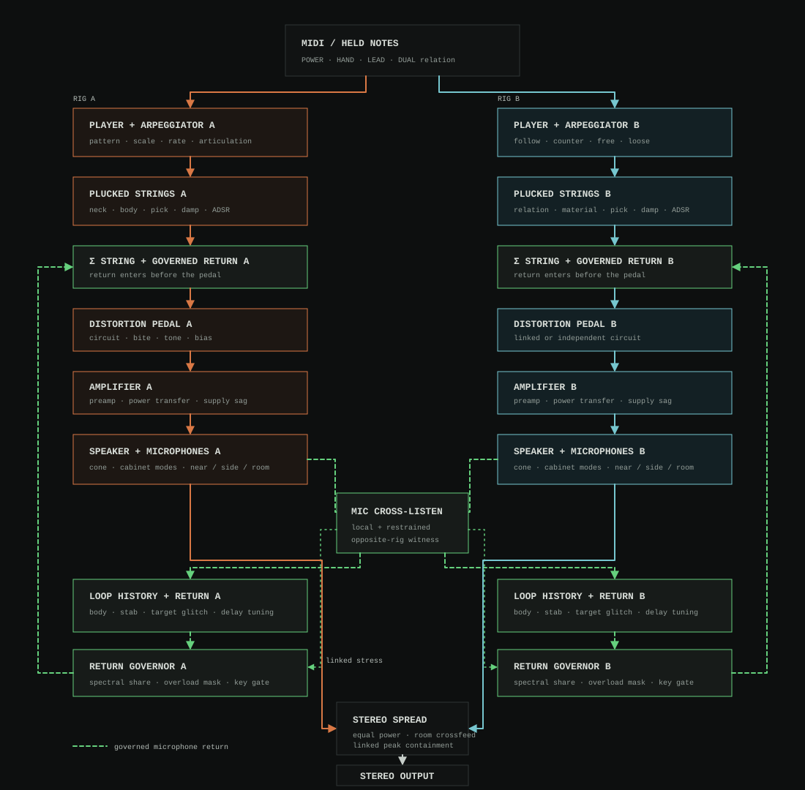

Processor Stack
s3g Processor Stack is a stereo MIDI instrument in which two pickup-viewed plucked-string players drive independent distortion pedals, sagging amplifiers, nonlinear loudspeakers, microphone pairs, and governed acoustic returns. The strings supply scrape, twang, palm damping, and pitch articulation; the amp and speaker feedback rigs supply the instrument's weight, squelch, harmonic changes, and unstable sustain.
DUAL introduces the second four-lane player. RELATION selects unison, fourth-down, fifth-up, octave-up, or stateful contrary motion; LOOSE adds bounded pick delay and tuning disagreement; and SPREAD places the complete rigs from mono through Guitar A left and Guitar B right. Each player independently selects neck and body behavior, and retains its own pedal memory, power-amp sag, speaker modes, microphones, room, overload response, pitch-related return, and target-glitch history.
The editor is divided into PLAY, RIG A, RIG B, and SCORE pages, with OUT fixed at the top on every page. SCORE places Player A and Player B beside one another on a shared vertical timeline so riffs can be written as a relationship instead of as two disconnected sequences. Guitar B can FOLLOW A's arpeggiator or run a COUNTER/FREE pattern with its own scale, rate, gate, phase, octaves, length, and eight declared positions. Its pedal, amplifier/speaker, and feedback/glitch controls can link to A or remain independent. Restrained microphone cross-listen, opposite-room crossfeed, a linked stress governor, and the final stereo ceiling keep both rigs responsive as one instrument.
PLAY page keeps dual-player relationships, articulation, stereo placement, and both arpeggiators available before moving into either rig's pedal, amplifier, speaker, and feedback controls.Workflow
- Insert
s3g Processor Stackon a stereo instrument track and send it MIDI notes. - Monitor the stereo output through speakers or headphones, begin with the
CROOKED STACK,BARE STACK, orONE FINGER RIFFpreset, and keep the host track level conservative. - Select
POWERfor generated root/fifth/octave voicings,HANDfor up to four played notes, orLEADfor last-note-priority monophonic lines. - Set
PICK,STRING, andDAMPfor attack hardness, pickup combing, string decay, and palm-like muting. At low String settings, the pick packet and speaker loop dominate. - Use
ATTACK,DECAY,SUSTAIN, andRELEASEto contour each generated string before it enters the pedal. RELEASE closes source energy; SPILL independently controls how long the existing amp and feedback state is inherited. - Raise
DUALfor a second player, choose its pitch behavior withRELATION, and useLOOSEfor controlled timing/tuning disagreement.SPREADmoves the complete rigs from a mono pair to Guitar A left and Guitar B right. NECK A/B and BODY A/B make the two instruments materially different. - On
PLAY, leave either arpeggiator'sPATTERNat OFF for direct playing, select a traversal rule, or choose CUSTOM and drag its horizontal position multislider to declare one to eight signed scale degrees. Drag across cells to paint a phrase, right-click a cell to make that stepREST, and double-click it to restore that position's default. Set Arp B to FOLLOW for one phrase, COUNTER to derive its root through the guitar relation, or FREE for a second clock; PHASE offsets its first attack. - For composed parts, open
SCORE, turn PLAYBACK to HOST PLAY, and enter frets into the adjacent A and B six-string grids. SCALE A and SCALE B constrain their respective FORM, LEAD, and RIFF randomizers. Select EXPLICIT TAB to write both players or RELATE A to derive B through DUAL and RELATION. Build the form by assigning sections A–D to the eight arrangement slots. - Use
RIG AandRIG Bfor separate materials, pedals, amplifiers/speakers, and feedback/glitch paths. On Rig B, choose LINK for any section that should inherit A, OWN for independent controls, or use the copy buttons as a matched starting point. - Choose a pedal
CIRCUIT, or select OFF for a neutral pedal bypass, then useBITE,STACK,SAG, andCONEto establish the distortion trajectory.SPEAKERranges from a small 3-inch practice driver through 10-, 12-, 15-, and 18-inch responses plus torn and ripped 12-inch cones. - Raise
FEEDBACKdeliberately. UsePROXIMITY,HARMONIC,TRACK, and signedPOLARITYto decide how the microphone return locks. RaisePIERCEandSELF LISTENwhen low speaker modes are masking the upper stab;FEEDBACK LANCEdemonstrates this regime. - Raise
TARGET GLITCHto capture those recognized stabs into note-period micro-cells, then useRATCHETfor shorter cells and more repetitions.TARGET ACQUIREDdemonstrates the full behavior. - Use
OVERLOAD MASKto decide how firmly the circuit clears dense, rough energy. It acts inside the speaker return rather than merely turning down the final output. - Use
CROOKEDfor interval-dependent hesitation, overshoot, repeated-note choke, and squawk. With the arpeggiator off it follows played intervals; with it on, every generated step provokes the same deterministic circuit response. - For tight metal rhythm, start from
CHUG CHUG CHUG: its CUSTOM pattern is three root degrees, POWER supplies the fifth, and short gates plus high damping create repeated palm-muted attacks.
Signal Flow

- Two optional tempo arpeggiators map the latest held key through their scale and movement rules. Their clock can run freely from the note attack or lock to the playing host timeline. B can follow A's generated note or use an independent counter/free phrase; POWER, HAND, or LEAD allocation then populates as many as four plucked-string lanes per player.
- Each related guitar bank enters its own stateful pedal, preamp, tone path, push-pull power transfer, and supply-sag envelope.
- Each power signal excites its own four lossy speaker modes plus displacement-dependent cone limiting and breakup. Driver size retunes and rebalances those modes; torn and ripped profiles add a continuously filtered mechanical flap rather than sample-rate discontinuities.
- Each microphone pair supplies its rig output and its own smoothed, DC-blocked, filtered, governed delay return.
- The two microphone loops cross-listen at a restrained governed level; equal-power placement and linked peak containment form the stereo output.
The feedback tap follows speaker distortion. Speaker displacement, breakup, voice-coil compression, cabinet modes, and microphone phase therefore change the regenerated signal itself. Moving the return ahead of the speaker would reduce the design to a distortion pedal followed by a resonant delay and is intentionally not offered.
The pedals, amplifiers, sag envelopes, speaker displacement, rooms, and feedback histories are independent per player. SPREAD applies equal-power symmetric placement to their complete outputs: zero is mono and maximum is Guitar A left / Guitar B right. A small opposite-room contribution and governed microphone cross-listen preserve a shared acoustic field, while the linked output ceiling preserves mono compatibility.
MIDI and Performance
| Mode | Behavior |
|---|---|
| POWER | One MIDI note populates root, fifth, and octave exciters. Shape moves from root/fifth toward a denser and more inverted voicing. |
| HAND | Up to four played notes enter the same stack. Voice stealing damps the oldest available exciter without resetting pedal, amp, speaker, or feedback state. |
| LEAD | Monophonic last-note priority with held-note restoration and legato retuning of the existing circuit. |
CROOKED responds to played intervals. Repeated notes choke and re-strike the speaker; seconds and tritones disturb the preferred loop harmonic; fourths, fifths, and octaves acquire it more directly; wide leaps overshoot before settling; and descending legato motion retains the previous attraction longer than ascending motion. The response is deterministic from the note sequence and velocity.
Both arpeggiators are deterministic. UP, DOWN, and PENDULUM traverse the selected scale; PEDAL alternates the root with a rising scale position; SCRAMBLE uses a fixed irregular stride. CUSTOM reads the horizontal positions 1–8 up to LENGTH. Each cell remains an individual automatable CLAP parameter. These are signed scale degrees, not semitones: zero is the played root, positive values ascend through the chosen rule, and negative values address degrees below it. REST closes the player's gate for that position while the eight-step clock continues; a FOLLOW B rests with A, while COUNTER and FREE B use their own REST positions. Right-click is the quick editor gesture, and host automation may enter REST or R. The scale menu retains CHROMATIC, PHRYGIAN, HARM MIN, DIMINISHED, and TRITONE, and adds NATURAL MINOR, DORIAN, PHRYGIAN DOM, LOCRIAN, MINOR PENTA, BLUES, HUNGARIAN MIN, DOUBLE HARM, and WHOLE TONE. Natural Minor, Dorian, Pentatonic, and Blues provide grounded riff/solo vocabularies; Locrian emphasizes the unstable flat fifth; Phrygian Dominant, Hungarian Minor, and Double Harmonic supply tense wide steps; Whole Tone supplies symmetrical ambiguity. Rates include 1/8 through 1/64 with triplets plus 1/4, 1/2, and 1/1 for slow processional riffs, using host tempo when supplied and 120 BPM otherwise. ARP SYNC selects FREE, where each phrase starts from its incoming note, or HOST SYNC, where step boundaries and pattern positions lock to the playing host beat timeline. A note received between grid lines waits for the next boundary. When the host is stopped or has no timeline, HOST SYNC falls back to the free clock so the instrument remains playable. OCTAVES applies to built-in traversals and GATE drives each generated string's ADSR. Arp B's PHASE offsets its independent host grid as well as its free-running first step. At dense rates, excess high-PICK energy is normalized from measured recovery and tempo spacing; alternating pick polarity waits until the preceding packet has cleared.
Stack Score
SCORE is a compact vertical arranger for sequencing Processor Stack directly. Four reusable 16-row sections feed eight arrangement slots, and ARRANGE LENGTH chooses how many slots loop. The large section tabs sit beneath the A/B relationship controls. Each row shows six standard-tuned guitar strings for Player A immediately beside six for Player B; frets 0–24 produce notes and a dash is a rest. Up to four sounding strings per player enter the same exciter allocation and complete rig paths used by live performance.
The four randomize actions belong only to the SCORE page and never change the current instrument or rig parameters. SCALE A and SCALE B reuse the complete arpeggiator scale list as composition parameters: every generated attack root for that player is quantized around the guitar's low E, while fifth/octave fret shapes move together so power chords remain physically intact. SCALE B governs explicit B tablature; RELATE A still derives B from A at playback. FORM composes a complete editable A–D form: low-string power-chord shapes and pedal tones, gallop and answer mechanics, a compact scale-constrained solo box with playable second-guitar harmony, A/B breakdown exchanges, and guitar-like hold chains. LEAD replaces only the selected section's notes with position-constrained, scale-aware single-note lines and one- or two-row sustains. RIFF replaces only that section's notes with predominantly scale-rooted power-chord and pedal-tone figures, including longer ringing attacks between the chugs. Both preserve the arrangement and every row lock. LOCKS replaces only the selected section's L1/L2 contents with contrasting control values arranged in two- to four-row runs; every row in a run contains the identical control and value so the setting persists visibly and audibly. It leaves all notes, form, and base controls intact. A pressed action flashes dark teal for immediate confirmation. The title-bar RANDOM continues to randomize sound character without touching SCORE.
In EXPLICIT TAB, the two grids are independent. In RELATE A, Player B is generated from A's row using the existing RELATION rule while preserving A's chord intervals; DUAL sets its level, LOOSE its disagreement, and SPREAD its stereo placement. This makes the A/B relationship visible and adjustable in the same view. Stack Score follows the playing host beat timeline at ROW RATE, releases each row at ROW GATE, and yields to direct MIDI/arpeggiator playing when playback is off or the host is stopped.
Each player also has two row-lock columns, L1 and L2. Right-click a lock cell to choose one of that player's material, pedal, amplifier/speaker, or microphone-feedback controls. A newly assigned control starts at a deliberately contrasting value so its effect is audible immediately; choosing the same control again preserves its edited value. Drag the cell vertically to edit its value and double-click it to clear. Locks are row-scoped rather than permanent: they are applied to the matched rig parameter before that row begins, remain active for that row (including notes held through it), and return to the base panel setting on the next row unless that row has another lock. A Player B lock temporarily uses B's own corresponding rig section even when that section is globally linked to A. Populated locks use a near-black blue-teal lane fill, and the current note-entry cell uses a separate dark teal fill with an outline, preserving contrast for the light-gray characters.
Click a tab cell and type a one- or two-digit fret. Arrow keys move through the grid, Tab crosses between players, and Return advances a row. H, tilde, or equals enters a ~ hold: the note already sounding on that same guitar string continues through the new row without another pick attack, and chained holds make longer notes. A hold without a preceding note is silent, and holds do not cross a host-timeline seek. Dash/period/Delete enters a rest, R copies the previous fret as a fresh reattack, and brackets decrement or increment a fret. These non-numeric commands remain visible in the NOTE ENTRY legend beneath the arrangement. Command-C/V or Control-C/V copies and pastes the current 16-by-12 tablature as tab-separated shorthand; pasted rows accept frets, ~/H/= holds, or -/. rests. Click section A–D to edit it, and click an arrangement slot to cycle its section assignment. Playback presentation follows the Tracker convention: a 60 Hz UI clock buffers one visual frame behind the audio publication and redraws only the old and new row cells. The low-luminance teal row remains translucent so fret and lock text stays legible. Score edits mark the host state dirty so project autosave can capture them.
Pick attacks use a PICK-dependent slew and bandwidth: zero PICK has a rounded, noise-free seed, while higher settings progressively restore a plectrum scrape and faster edge. The established response is unchanged through 75% of the slider; above that point the scrape, upper partials, comb depth, and pickup-velocity brightness rise on a compressed curve instead of all reaching their former rough endpoints together. This keeps hard articulation precise without disturbing the ordinary PICK range or the overload-mask behavior. Pickup velocity remains bounded and band-limited while a string retunes, and repeated-note speaker choking follows a smoothed target. Controls edited during silence are adopted before the next note instead of waking from stale PLAY values; bias-bearing pedal models are also referenced against their idle response.
In POWER mode, SHAPE controls sustained chord weighting rather than launching another full-strength exciter each time the octave enters. The root attack remains invariant; fifth and octave pick contributions are energy-budgeted and band-limited separately from their held gains, then bloom into their player's amp. Automating SHAPE crossfades voicing and does not create a new pick packet.
The ADSR belongs to each exciter lane rather than the stereo output. POWER tones share a gesture, HAND notes remain independently articulated, and LEAD or arpeggiator retriggers rise from the current envelope value without a discontinuous reset. Low SUSTAIN and short DECAY/RELEASE create palm-muted chugs; long ATTACK and RELEASE create cabinet swells. Closing the envelope does not erase pedal, sag, speaker, room, or microphone-loop memory.
Note-on velocity controls both pick impact and the sustained string level, so quiet and hard attacks remain dynamically distinct through the complete rig. Processor Stack advertises CLAP note expression, MIDI, and MIDI MPE input. CLAP per-note pressure/tuning/brightness and MPE member-channel pressure, pitch bend, and CC74 timbre stay attached to the originating note; the related second guitar follows that expression source as well. Pressure increases the selected string's energy and microphone-loop stress, tuning bends its string before the feedback loop catches up, and timbre moves its pickup/string bandwidth. Raw MIDI polyphonic aftertouch targets its key, while ordinary channel pressure and pitch bend affect every note held on that channel. Pitch-bend sensitivity defaults to two semitones and follows MIDI RPN 0,0 Data Entry—including the wider ranges sent by MPE controllers. Leave MIDI RECEIVE at OMNI for a full MPE zone, or select channels 1–16 for conventional filtering.
Controls
| Panel | Controls | Role |
|---|---|---|
| Play | Mode / Shape / String / Pick / Damp / Glide / Crooked / Spill / Attack / Decay / Sustain / Release | Defines voicing, string and pick behavior, performance gesture, per-string articulation, and separate inheritance of the existing stack tail. |
| Arpeggiator A/B | Relation B / Pattern / Scale Rule / Rate / Octaves / Gate / Phase B / Length / horizontal Positions 1–8 | Runs one followed phrase or two deterministic host-tempo scale-degree cells before POWER, HAND, or LEAD voicing. |
| Stack Score | Playback / Row Rate / Row Gate / Arrange Length / Scale A–B / Player B / Relation / Dual / Spread / Sections A–D / Arrangement 1–8 / dual six-string tab grids / L1–L2 row locks per player | Sequences both players and player-specific Stack controls on one host-synced vertical timeline; FORM, LEAD, and RIFF follow the selected per-player scales, while B can use explicit tablature or derive its chord from A through the pair relation. |
| Pair / Stereo / Output Mixer | Dual / Relation / Loose / Spread / A–B Level / A–B Pan / A–B Mute | Creates the second related player, its pitch/timing disagreement, and a post-rig stereo mixer. SPREAD remains the width master; the two pan controls set each rig's direction and bias, so their default left/right stage can be narrowed, offset, or reversed. Independent dB faders and click-smoothed mute buttons act after each complete rig without stopping its internal speaker and feedback memory. |
| Rig A / Rig B Material | Neck / Body | Selects independent maple, mahogany, aluminum, or composite neck behavior and solid, hollow, semi-hollow, or aluminum body response. |
| Rig A / Rig B Pedal | Circuit / Bite / Tone / Bias | Selects SHRED, WOOL, RAT, ZONE A/B, FUZZ I/II, DIODE, or OFF for each pedal. OFF makes Bite, Tone, and Bias inert while retaining click-safe circuit switching. |
| Rig A / Rig B Amplifier / Speaker | Stack / Sag / Focus / Speaker / Cone / Cab / Mic | Controls each rig's preamp/power arrival, supply recovery, speaker breakup, cabinet modes, and microphone view. Speaker choices are LIL' SMOKY 3", TIGHT 10", CLASSIC 12", DEEP 15", HEAVY 18", TORN 12", and RIPPED 12". |
| Rig A / Rig B Feedback | Feedback / Proximity / Harmonic / Track / Polarity / Root / Chaos / Pierce / Self Listen / Target Glitch / Ratchet / Overload Mask | Sets each return's gain/tuning, adaptive stab balance, target capture recurrence, and internal masking. Rig B sections can link to A. |
| Output | Out | Final stereo trim after linked peak containment. |
| Routing | MIDI Receive / Arp Sync | Selects OMNI or a specific MIDI channel, plus note-relative FREE timing or HOST SYNC beat-grid timing for both arpeggiators. |
CROOKED and CHAOS have separate jobs. Crooked changes how performed intervals retune and strike the system. Chaos increases competition among speaker modes and microphone paths; it does not randomize pitch or compose phrases.
Feedback and Safety
Each microphone return uses fractional delay interpolation, smoothed delay retuning, DC blocking, nonlinear storage, and two bounded lanes. BODY is a broad high-passed speaker return. STAB uses a shorter note-related delay and a topology-preserving state-variable band around a selected upper partial. Its integrator states, STAB sum, and final return approach their limits continuously rather than striking hard clamps. Independent energy followers and governors keep either lane from monopolizing its rig. SELF LISTEN compares their measured spectral share with the target established by PIERCE; when the upper lane is masked it attenuates BODY and raises STAB inside their separate limits. A final whole-loop governor remains after this spectral negotiation, and the two rigs cross-listen at a lower governed level.
TARGET GLITCH does not sample the final output indiscriminately. A note or arpeggiator attack arms the detector, which waits for measurable narrow-band STAB energy before capturing recent upper-return history. The cell spans an integer-like group of target-partial periods; RATCHET shortens that group and raises its finite repeat count. Raised-cosine playback windows remove cell-edge discontinuities. Stronger settings introduce deterministic octave-speed and reverse repetitions, while a dedicated glitch-energy governor keeps the recurrence subordinate to the complete feedback loop. In HAND mode the cell comes from the combined speaker response of all active strings.
OVERLOAD MASK watches smoothed speaker level, voice-coil stress, loop-return energy, and normalized sample-to-sample roughness in both rigs. A loud but coherent low drone therefore does not receive the same treatment as a dense broadband feedback collapse. When either detector rises, a linked stress signal asks both rigs to clear space: a slow mask removes upper speaker energy, reduces STAB and glitch reinjection more strongly than BODY, and lowers requested feedback. Attack and recovery are smoothed, so containment should sound like the cabinets clearing space rather than a digital gate or emergency mute.
The cabinet resonators also monitor their own stored displacement. Earlier high-Q low modes could spend thousands of consecutive samples inside their emergency state limiter; CONE did not create that condition, but its broadband breakup made the resulting scratch easy to hear. The low modes now use a physically lower resting Q and a fast, smoothly recovered stress damping stage before the emergency limit. In the sustained cone/cabinet sweeps used for regression, state-limit contact falls to a handful of startup samples rather than becoming a second distortion circuit.
SPILL lengthens the held-note gate's release so a new note can inherit the previous speaker state. Measured loop activity cannot reopen that gate. After the final note, the requested return falls below unity and drains to numerical silence; there is no indefinite hold mode.
A linked stereo ceiling catches pathological current-sample peaks. It is a final safeguard rather than the source of feedback regulation. The circuit remains active internally while an audible tail exists and reports a parameter-dependent CLAP tail to the host.
Factory Presets and State
The twenty-four presets include Aluminum Argument, now a wide metal/wood lead pair with an independent diminished B arpeggio and bright second rig, and Hollow Fifths, now a slow hollow second amplifier with its own pedal, feedback return, and half-note pedal rule. The fast arpeggiator presets use short low-sustain contours, Chug Chug Chug has a near-immediate palm-muted envelope, and Slow Monolith uses a 380 ms attack with a multi-second release for spacious doom movement. RANDOM preserves OUT and the complete DUAL / RELATION / LOOSE / SPREAD audition frame while varying the performance, construction, arpeggiators, speaker profiles, and rigs. Presets use only the public synthesis parameter surface; MIDI Receive, Arp Sync, and the complete Stack Score are left unchanged.
Saved projects and Processor Stack preset files retain the complete two-rig surface, both speaker selections, both arpeggiators, their link choices, all four tab sections, the eight-slot Stack Score arrangement, and every per-player row lock. Projects made before speaker selection load both rigs as CLASSIC 12", the closest base response with the corrected resonator damping. Circuit, speaker, voicing, relation, material, arpeggiator, and link selections are stepped; continuous controls are smoothed, and circuit changes crossfade without clearing the running rig.
How the Rigs Behave
Two banks of four exciter lanes provide recovery-aware, velocity-shaped pick packets into fractional-delay strings with damping, material-dependent dispersion and loss, nonlinear bridge loss, body resonance, and position-dependent pickup combs. Each lane has its own ADSR before its player enters an independent pedal, amplifier, and four-mode speaker. LOOSE delays and detunes only the second player's attacks. Equal-power placement acts on the complete rig outputs rather than a reconstructed difference witness. Both power stages are evaluated at 2x rate.
Each of the eight driven pedal choices has its own gain, bias, filtering, and nonlinear response, and each rig retains an independent circuit history; OFF crossfades to the unprocessed pedal input and leaves those controls inactive. The nonlinear speaker and microphone signal sits inside that rig's feedback system rather than after it. Restrained cross-listening lets one cabinet disturb the other, while the linked overload governor clears dense upper energy before the final stereo ceiling has to act.
Limits
Processor Stack is a reduced-order musical circuit, not a component-exact model of a named pedal, amplifier, driver, cabinet, microphone, room, guitar, or guitarist. Its string branch is a compact waveguide rather than a six-string physical reconstruction, and its cabinet modes are not an impulse response. The instrument draws on general power-chord, angular-interval, extreme-metal scalar, feedback-riding, and damaged-amplifier practices without containing recorded material, transcribed phrases, or a replica of a particular performer's tone.